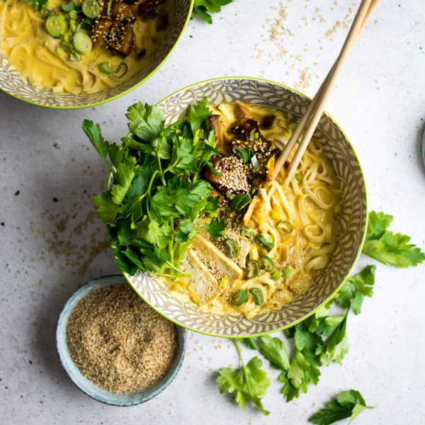

Coconut Curry Ramen

This asian fusion dish is a staple at our house
No history on this one, I'm afraid. Curry has been around since the early 1600's
and ramen has debated origins, anywhere from the 17th to the 20th century.
This fusion recipe is one my mom probably saw on the internet somewhere, but she has been making it for years.
Grab those ingredients!
- 2 (3.5-ounce) packages instant ramen noodles (we don't need the flavor packets!)
- 1 1/2 tablespoons oil (canola works just fine)
- 1 medium sweet onion, or 2 medium shallots. Diced.
- 3 tablespoons red OR green curry paste
- 2 tablespoons tomato paste
- 4 minced cloves of garlic
- 1 (13.5 ounce) can coconut milk
- 4 cups chicken/veggie stock
- Protein of choice! Pork, chicken or tofu all work great here
- Garnish with cilantro and soft boiled egg
Here's how ya make it!
- In a large pot of boiling water, cook noodles until just tender, about 2-3 minutes. Rinse under cold water and drain; set aside.
- Heat canola oil in a large stockpot or Dutch oven over medium heat. Add shallot, and cook, stirring frequently, until tender, about 3 minutes.
Stir in curry paste, tomato paste, garlic and ginger until fragrant, about 2 minutes.
- Stir in coconut milk and chicken stock. Bring to a boil; reduce heat, cover and simmer until flavors have blended, about 8-10 minutes.
- Divide noodles and broth into bowls. Top with protein (if desired), soft boiled eggs and cilantro.